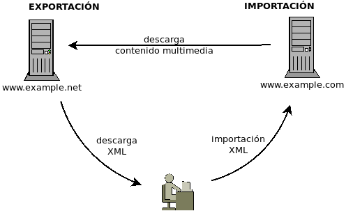
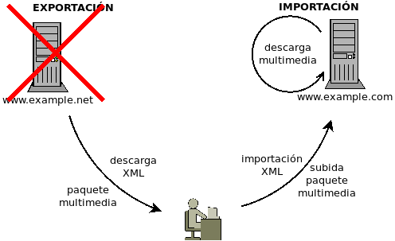

7.2.2.3.5. Wordpress¶
wordpress es un CMS orientado a la creación de blogs, aunque se usa también incluso para crear sitios web generales.
Lo habitual es que se instale para albergar un único blog, pero es posible también hacer una instalación que permita la gestión de varios, cada uno de los cuales con su administrador. Ambas instalaciones las trataremos bajo este epígrafe.
Nota
En el momento de la escritura de estos párrafos la última versión de wordpress es la 4.9.4.
7.2.2.3.5.1. Blog único¶
7.2.2.3.5.1.1. Preliminares¶
Se supone instalado ya un servidor nginx con soporte para
contenido dinámico en PHP y MySQL, que reservaremos para
wordpress el nombre blog.example.net y que albergaremos la
aplicación en /srv/www/blog.
Se necesitan, adicionalmente, los siguientes módulos de PHP:
# apt-get install php-{gd,mbstring,xml{,rpc}}
Además es necesario crear una base de datos para wordpress y un usuario que la gestione:
# mysql
mysql> CREATE DATABASE wordpress;
mysql> GRANT ALL PRIVILEGES ON wordpress.* TO 'wordpress'@'localhost' IDENTIFIED BY 'contraseñadificil';
Nota
El usuario y la contraseña sólo serán necesarios recordarlos para el proceso de instalación con wordpress, así que no es demasiado molesto que ambos sean complicadísimos.
Por último, debe descargarse y descomprimirse wordpress en
/srv/www/blog:
# mkdir -p /srv/www/blog
# wget -q http://wordpress.org/latest.tar.gz -O - | tar -C /srv/www/blog --strip-components=1 -zxvf -
# chown -R www-data /srv/www/blog
Nota
Durante la instalación damos la propiedad de toda la aplicación al usuario www-data, es decir, a aquel que ejecuta el servidor web. Esto permitirá que el proceso de instalación pueda hacer las modificaciones pertinentes sin problemas. Tras instalar, corregiremos esto para mejorar la seguridad del sitio.
7.2.2.3.5.1.2. Configuración de nginx¶
Como la aplicación requiere la introducción de contraseñas, es conveniente que
corra en un sitio seguro, así que podemos utilizar esta configuración:
server {
listen 80;
listen 443 ssl;
server_name blog.example.net;
root /srv/www/blog;
try_files $uri $uri/ /index.php$is_args$args;
index index.php;
include snippets/snakeoil.conf;
# Separamos los logs en ficheros aparte
access_log /var/log/nginx/blog.access.log;
error_log /var/log/nginx/blog.error.log;
# Redirección al sitio seguro
if ($https != "on") {
return 301 https://$host$request_uri;
}
include snippets/robotsoff.conf;
include snippets/faviconoff.conf;
# Evita que se ejecute cualquier
# script php subido por el usuario.
location ^~ /wp-content/uploads/ {
expires max;
access_log off;
log_not_found off;
}
location ~ \.php$ {
include snippets/fastcgi-php.conf;
fastcgi_pass php;
}
location ~* \.(?:js|css|jpe?g|gif|htc|ico|png|html|xml|otf|ttf|eot|woff2?|svg)$ {
expires max;
access_log off;
log_not_found off;
}
}
La configuración incluye dos snippets:
robotsoff.confque deshabilita el registro de las consultas al fichero robots.txt:
# /etc/nginx/snippets/robotsoff.conf location = /robots.txt { allow all; log_not_found off; access_log off; }
faviconoff.confque deshabilita el registro de acceso al favicon:
# /etc/nginx/snippets/faviconoff.conf location = /favicon.ico { log_not_found off; access_log off; return 410; }
7.2.2.3.5.1.3. Instalación¶
Basta con visitar el sitio desde un navegador y seguir las sencillísimas instrucciones. Al término, conviene cambiar los permisos para aumentar la seguridad del sitio:
# chown -R root:root /srv/www/blog
# chown -R www-data /srv/www/blog/wp-{config.php,content}
Además, si se quiere permitir la instalación de plugins desde la interfaz
web, debe añadirse la siguiente línea al fichero wp-config.php:
# Instalación directa de plugins
define('FS_METHOD', 'direct');
Advertencia
Esta línea (y otras que se añadan a mano más adelante) deben añadirse siempre antes de la línea que reza:
/* That's all, stop editing! Happy blogging. */
7.2.2.3.5.1.4. Optimizaciones¶
7.2.2.3.5.1.4.1. Cacheo de contenido dinámico¶
El rendimiento de nuestra blog puede verse mejorado muy sensiblemente si habilitamos una caché para las páginas dinámicas, de manera que el código PHP sólo vuelva a generar la página, si esta realmente ha cambiado; en caso contrario echaremos mano de la página cacheada.
Para este propósito necesitamos dos componentes:
Habilitar la capacidad de proxy caché de nginx, de manera semejante a como lo hicimos para crear la caché de paquetes de debian, pero en este caso cacheando fastcgi.
Un plugin de wordpress, nginx cache, que ordene a nginx borrar las páginas cacheadas que han sufrido algún cambio al producirse una acción en nginx.
Para lo primero basta con crear un directorio adecuado que, por coherencia con el epígrafe dedicado a la otra cache, llamaremos:
# mkdir -pm700 /var/cache/nginx
# chown www-data /var/cache/nginx
y modificar el fichero de configuración ya propuesto para añadir1:
fastcgi_cache_path /var/cache/nginx/wp-cache
levels=1:2
keys_zone=wp-cache:100m
inactive=60m;
server {
# Configuracion...
include snippets/robotsoff.conf;
include snippets/faviconoff.conf;
# Evitamos cachear el panel de administración, porque
# el plugin no parece funcionar bien y no lo purga cuando debe.
set $skip_cache 0;
if ( $request_uri ~ /wp-admin/ ) {
set $skip_cache 1;
}
# Evita que se ejecute cualquier
# script php subido por el usuario.
location ^~ /wp-content/uploads/ {
expires max;
access_log off;
log_not_found off;
}
location ~ \.php$ {
include snippets/fastcgi-php.conf;
fastcgi_pass php;
fastcgi_no_cache $skip_cache;
fastcgi_cache wp-cache;
fastcgi_cache_valid 60m;
fastcgi_cache_bypass $http_pragma; # Evita la cache con Ctrl+F5 (Pragma: no-cache)
fastcgi_cache_key "$scheme$request_method$host$request_uri";
fastcgi_cache_use_stale error timeout invalid_header http_500;
fastcgi_ignore_headers Cache-Control Expires Set-Cookie;
add_header X-RunCloud-Cache $upstream_cache_status;
}
# Resto de configuración ...
}
Ver también
Para saber más sobre el cacheo de contenido dinámico, consulte el apartado dedicado a ello.
Para lo segundo, no hay más que instalar el plugin y, al configurarlo, indicar cuál es el fichero de caché.
Advertencia
Sobre esta configuración es indispensable hacer dos precisiones:
El plugin no se comporta bien con las páginas del panel de administración, por lo que debemos evitar cachearlas según se propone en la configuración de más arriba.
Es una instalación multisitio es necesario:
Configurar el plugin para cada blog particular.
El bloque:
if (!-e $request_filename) { rewrite ^/wp-admin/network(/.*) /wp-admin$1 last; rewrite ^(?:/[^/]+)?(/.*) $1 last; }
no debe situarse antes del bloque condicional que fija el valor de la variable $skip_cache.
7.2.2.3.5.1.4.2. Cacheo de contenido estático¶
Nota
Esta optimización es independiente de la anterior, así que si se quiere aplicar las dos no hay más que incluir los cambios expuestos bajo el epígrafe anterior a la configuración sugerida bajo éste.
Advertencia
Aunque bajo en el epígrafe se entremezclen, esta optimización sobre contenido estático, se basa en dos aspectos que pueden ser implementados independientemente:
En que nginx indexe los contenidos estáticos para que sea capaz de servirlos más eficientemente (las sentencias
open_file_cache).En que los contenidos estáticos se sirvan con otro nombre (static.example.net) a fin de que con este nombre la transferencia sea HTTP y no HTTPs, lo cual permitirá a proxies intermedios cachear ese contenido. Ahora bien, esto sólo funciona si el certificado es válido y acreditado, ya que en caso contrario el navegador rechazará los contenidos de static.example.net sin llegar a preguntarnos si confiamos en el certificado para este segundo sitio, pues nunca entramos explícitamente en el.
Si utiliza un servicio como Cloudflare este segundo aspecto es absolutamente irrelevante, ya que este proxy se encarga de descifrar y recifrar para el cliente; y sólo tiene interés implmentar el primer aspeecto.
La configuración sugerida para nginx obliga a que toda la comunicación sea segura. Sin embargo, que la configuración sea segura tiene un pequeño inconveniente: inutiliza los proxies caché intermedios ya que todo está cifrado, incluso las cabeceras. Por ello, vamos a hacer lo siguiente:
Crearemos otro nombre de máquina static.example.net.
Modificaremos la configuración de wordpress para que el contenido estático lo pida a través de este nombre y para que las cookies estén asociadas exclusivamente al otro (blog.example.net).
Modificamos nginx para que al pedir contenido estático, excepto javascript y CSS2, la petición se redirija al sitio no seguro.
- Ventajas
Como la solicitud de contenido estático no incluye cookie alguna, podemos cachear con el propio nginx el contenido.
Si hay un proxy intermedio que cachea contenidos, todo nuestro contenido estático, excepto javascript y css, lo cacheará también.
- Desventajas
El contenido estático no seguro se pide dos veces: primero por HTTPs y luego por HTTP, que es cuando se sirve. En cualquier caso, como la redirección es permanente (código 301), cada navegador sólo repetirá la petición una vez.
Nota
El cacheo local de contenidos que permite a nginx acelerar
el servicio de contenido estático es independiente de que los contenidos se
sirvan por protocolo seguro o no. Por tanto, podríamos poner en práctica la
mitad de esta configuración (la referente a las directivas
open_file_cache) sin llegar a hacer la redirección hacia el sitio no
seguro.
Para llevarlo a cabo hay que editar el fichero wp-config.php del
directorio raíz de wordpress y añadir estas tres líneas al comienzo
del fichero:
define("WP_CONTENT_URL", "https://static.example.net/wp-content");
define("COOKIE_DOMAIN", "blog.example.net");
define("WP_PLUGIN_URL", "https://static.example.net/wp-content/plugins");
Y dejar una configuración para nginx como esta3:
server {
listen 80;
listen 443 ssl;
server_name blog.example.net
static.example.net;
root /srv/www/blog;
index index.php;
include snippets/snakeoil.conf;
access_log off;
log_not_found off;
error_log /var/log/nginx/blog.error.log;
location / {
try_files $uri $uri/ /index.php$is_args$args;
# Redirección al sitio seguro
if ($https != "on") {
return 301 https://$host/$request_uri;
}
location ~* \.(?:js|css)$ {
# Habilitamos la caché de nginx
open_file_cache max=3000 inactive=120s;
open_file_cache_valid 45s;
open_file_cache_min_uses 2;
open_file_cache_errors off;
}
location ^~ /wp-content/uploads/ {
expires max;
}
location ~ \.php$ {
access_log /var/log/nginx/blog.access.log;
log_not_found on;
include snippets/fastcgi-php.conf;
fastcgi_pass php;
}
}
location ~* \.(?:jpe?g|gif|htc|ico|png|html|xml|otf|ttf|eot|woff2?|svg)$ {
expires max;
# Habilitamos la caché de nginx
open_file_cache max=3000 inactive=120s;
open_file_cache_valid 45s;
open_file_cache_min_uses 2;
open_file_cache_errors off;
# Redirección al sitio no seguro
set $check_ssl "${https}${host}";
if ($check_ssl = "onstatic.example.net") {
return 301 http://$host$request_uri$is_args$args;
}
}
}
Nota
Si quiere utilizar esta optimización y la anterior, asegúrese
de incluir el bloque que define la variable $skip_cache fuera
del bloque location /.
Nota
Si el cambio se lleva a cabo, cuando el blog ya está en funcionamiento y contiene entradas y mensajes, entonces habría que cambiar en la base de datos referencias de blog a static:
# mysql wordpress
mysql> UPDATE wp_posts SET post_content = REPLACE(post_content,
-> '//blog.example.net/wp-content/uploads/','//static.example.net/wp-content/uploads/');
Advertencia
En una instalación multisitio, asegúrese de que el bloque:
if (!-e $request_filename) {
rewrite ^/wp-admin/network(/.*) /wp-admin$1 last;
rewrite ^(?:/[^/]+)?(/.*) $1 last;
}
se encuentra fuera del bloque location /.
7.2.2.3.5.2. Multisitio¶
Las versiones modernas de wordpress (a partir de la versión 3.0) permiten el alojamiento de múltiples blogs independientes en vez de uno sólo (que es el caso que se ha visto bajo el epígrafe anterior).
Nuestra intención ahora es alojar una multitud de blogs bajo el dominio blogs.example.net, de manera que se llegue a ellos a través de subdirectorios4. Por tanto:
Blog |
Dirección |
|---|---|
principal |
|
blog2 |
|
etc |
|
7.2.2.3.5.2.1. Preliminares¶
Siguiendo la instalación para un único blog
necesitamos tener instalados en el servidor nginx, PHP y
MySQL. Hecho esto, procedemos a realizar una instalación de
wordpress como si pretendiéramos configurarlo para un solo blog
usando el fichero de configuración ya facilitado.
Nota
Todo es igual salvo por el hecho de que, ya que la instalación nos servirá para varios sitios, hemos decidido:
Llamar a la máquina blogs.example.net.
Usar como directorio raíz
/srv/www/blogs.
El fichero de configuración debe modificarse para que así sea.
7.2.2.3.5.2.2. Configuración¶
Completada la instalación de wordpress, lo primero que debemos hacer
es añadir estas dos líneas a wp-config.php a fin de que aparezcan las
opciones multisitio en la interfaz de administración:
# Multisitio
define('WP_ALLOW_MULTISITE', true);
define('WPMU_ACCEL_REDIRECT', true);
Hecho lo cual, debemos volver a entrar en la interfaz de administración de
wordpress, donde veremos, ahora sí, la entrada Tools>Network Setup. Basta
con elegir un nombre para nuestra red de blogs y pinchar sobre Install. El
propio wordpress nos advertirá de qué debemos escribir en el fichero
wp-config.php:
define('MULTISITE', true);
define('SUBDOMAIN_INSTALL', false);
define('DOMAIN_CURRENT_SITE', 'blogs.example.net');
define('PATH_CURRENT_SITE', '/');
define('SITE_ID_CURRENT_SITE', 1);
define('BLOG_ID_CURRENT_SITE', 1);
Con ello debemos modificar la configuración de nginx para dejarlo de
esta otra forma:
map $uri $blogname {
default main; # O como se quiera llamar al blog principal
~^/(?!wp-)(?P<blogpath>[^/]+)/.*$ $blogpath;
}
server {
listen 80;
listen 443 ssl;
server_name blogs.example.net;
root /srv/www/blogs;
try_files $uri $uri/ /index.php$is_args$args;
index index.php;
include snippets/snakeoil.conf;
# Separamos los logs en ficheros aparte
# Pero los errores no admiten variables (https://trac.nginx.org/nginx/ticket/562)
access_log /var/log/nginx/blogs.$blogname.access.log;
error_log /var/log/nginx/blogs.error.log;
# Redirección al sitio seguro
if ($https != "on") {
return 301 https://$host$request_uri;
}
include snippets/robotsoff.conf;
include snippets/faviconoff.conf;
if (!-e $request_filename) {
rewrite ^/wp-admin/network(/.*) /wp-admin$1 last;
rewrite ^(?:/[^/]+)?(/.*) $1 last;
}
# Evita que se ejecute cualquier
# script php subido por el usuario.
location ^~ /wp-content/uploads/ {
expires max;
access_log off;
log_not_found off;
}
location ~ \.php$ {
include snippets/fastcgi-php.conf;
fastcgi_pass php;
}
location ~* \.(?:js|css|jpe?g|gif|htc|ico|png|html|xml|otf|ttf|eot|woff2?|svg)$ {
expires max;
access_log off;
log_not_found off;
}
}
Los añadidos no son muchos5. En puridad, sólo es necesario el bloque
if. El otro añadido, que implica usar map, sólo sirve para dividir los
registros de acceso para que cada blog lo haga en fichero aparte. Para que esto
sea viable, además, es necesario que el usuario www-data pueda crear los
ficheros de registro en /var/log/nginx:
# chown www-data /var/log/nginx
# chmod g+s /var/log/nginx
Advertencia
Por alguna razón, al hacer una instalación multisitio, la vista de las entradas pertenecientes a una categoría, deja de funcionar, porque wordpress convierte las direcciones en:
http://blogs.example.net/nombre-blog/category/nombre-categoria
Podemos soslayar este problema, configurando cada blog particular para que
en Ajustes>Enlaces permanentes, la Categoría base sea
/category u otra cualquiera de nuestra elección (p.e.
/secciones).
7.2.2.3.5.2.3. Optimizaciones¶
Como en el caso de un solo blog, es posible el cacheo de contenido estático y dinámico. Como en la configuración multisitio los cambios son mínimos, no es difícil implementarlos siguiendo las instrucciones ya indicadas.
7.2.2.3.5.3. Postinstalación¶
7.2.2.3.5.3.1. Extensiones indispensables¶
Completada la instalación, hay ciertas extensiones (plugins) que pueden resultarnos muy útiles:
- nginx cache
Plugin para gestionar una caché interna que aceleré wordpress. Se ha tratado al hablar sobre las optimizaciones.
Nota
En una instalación multisitio, es necesario tener en cuenta que hay que habilitar el plugin para cada sitio por separado.
- Advanced noCaptcha & invisible Captcha (v2 & v3)
Habilita la versión 2 <https://www.google.com/recaptcha/intro/v2.html> o la versión 3 de Google reCaptcha. Es necesario generar en el enlace facilitado un par de claves con una cuenta de Google para poder usarlo, ya que la configuración lo requiere. Con las extensión podemos proteger el formulario de acceso, el de registro, la creación de comentarios y la petición para cambio de contraseña.
- Easy WP SMTP
Plugin indispensable para permitir que Wordpress use un servidor SMTP para expedir correos, en vez del módulo de PHP que por lo general provoca que los mensajes sean rechazados por los servidores y, en consecuencia, jamás sean entregados.
Con la extensión podemos o usar nuestro servidor de correo local, si es que lo hemos instalado y configurado; o un servidor externo al que accedamos por autenticación.
- Adaptación RGPD/LOPD
En mayo de 2018 entró en vigor el Reglamento General de Protección de Datos que obliga a informar al usuario del tratamiento que se hará de sus datos y cómo será este. Para adecuar nuestro Wordpress a él este plugin es extraordinariamente útil.
Ver también
Esta entrada en la web de webempresa.com puede servirnos de mucha ayuda.
Estas cuatro (o tres si no optimizamos) extensiones debe ser de obligada instalación, o bien, otras tales que hagan la misma tarea. La instalación de otras extensiones dependerá de cuál sea el uso que demos al sitio.
7.2.2.3.5.3.2. Actualizaciones¶
Con los permisos sugeridos, tanto la actualización de temas como la de plugins, debe llevarse a cabo a través de la interfaz web sin problemas. La actualización a una versión de wordpress, en cambio, exige un cambio global de permisos:
# chown -R www-data /srv/www/blog
para poder llevar a cabo la actualización. Una vez completada ésta, es recomendable volver a los permisos anteriores:
# chown -R root /srv/www/blog
# chown -R www-data /srv/www/blog/wp-{config.php,content}
7.2.2.3.5.3.3. Usuarios¶
Los usuarios de Wordpress tienen un rol, esto es, un distinto nivel de privilegios:
Administrador de la red o Superadministrador, que será el administrador total de todo el sitio y podrá realizar cualquier tarea y, en exclusiva:
Instalar plugins en la aplicación.
Instalar temas en la aplicación6.
Ajustar parámetros que afectan al funcionamiento general del sitio (activar el resgistro automático de usuarios, fijar el tamño máximo de archivo, etc.)
Administrador de blog7, que es aquel que tiene la labor de gestionar por completo un blog particular del sitio.
Editor, que tiene capacidad de publicar entradas y de editar logias propias y ajenas.
Autor, capaz de publicar y editar sólo sus propias entradas.
Colaborador, que puede editar sus propiar entradas, pero no publicarlas.
Suscriptor, que sólo es capaz de leer entradas y editar su perfil.
Advertencia
En instalaciones multisitio, salvo el primero, como es natural, el resto de roles se tienen para un blog particular, de modo que un usuario puede tener un rol en un blog y otro rol distinto en otro.
Nota
En principio, el auto-registro de nuevos usuarios está deshabilitado y
sólo es posible mediante invitación del superadministrador. El
auto-registro puede habilitarlo el superadministrador en Ajustes>Ajustes
de la red. Sea como sea, el registro sólo implica el alta en la red de
blogs, no el adquirir un rol determinado en un blog particular. Para esto
segúndo, deberá el administrador de tal blog conferir uno concreto.
Autenticación con Google
Es posible autenticarse en wordpress mediante el sistema de autenticación de Google, para lo cual debe instalarse un plugin apropiado como Login with Google. Hay que tener presente varios aspectos:
Se necesitarán unas credenciales de Google para hacer efectivo el plugin. Basta una cuenta en Google y acudir a la consola de desarrollo para crer un proyecto y, dentro de él, unas credenciales.
La autenticación con Google permite la autenticación alternativa de usuarios y puede configurarse el plugin para que si el usuario no existe, se genere automáticamente una cuenta.
7.2.2.3.5.3.4. Recetas¶
Bajo el presente epígrafe se enumeran muy esquemáticamente algunas recetas para incorporar contenido al sitio.
- Vídeo
Mediante incorporación de elementos
iframeal contenido. En el caso particular de youtube es posible, simplemente, incorporando en párrafo aparte el enlace en la vista visual:https://www.youtube.com/watch?v=e8TZbze72BcSi se quiere tener más control sobre el formato (p.e. ajustar el tamaño), entonces debe recurrirse a añadir directamente el
<iframe>, cuyo código puede obtenerse del enlace «Compartir», y dentro de él «Insertar»- Mapas (de Google)
Basta, de igual modo, con hacerse con el
iframede la vista que nos interese. El código puede obtenerse del enlace «Compartir».Nota
Si lo que se pretende es crear mapas interactivos, siga las instrucciones de esta página.
Nota
En general, cualquier objeto no-HTML que deseamos mostrar, podrá
incustrarse recurriendo al código con <iframe> que se nos facilite (p.e.
cualquier podcast ofrecido a través de la plataforma ivoox)
Advertencia
En los wordpress multisitio sólo el superadministrador
puede incrustar elementos <iframe>. En el siguiente apartado se
proporciona una solución para sortear este inconveniente.
7.2.2.3.5.3.5. Migración¶
wordpress incorpora un sencillo mecanismo para migrar un blog desde un servidor de internet a otro distinto, que sigue el siguiente esquema:
Nota
No se realiza la migración de un sitio entero, sino de un blog particular, lo cual debe tener en cuenta si la instalación es un wordpress multisitio
Para poder llevar a cabo la migración:
- En el servidor web original
debemos exportar el blog a través de la entrada «Herramientas» del Escritorio del blog en cuestión. Tal acción generará un fichero XML que contendrá el texto y la estructura del blog. En cambio, del contenido multimedia, como las fotos, sólo se incluirá el enlace a su ubicación en el sitio original (www.example.net en el ejemplo).
- En el servidor web de destino
con wordpress instalado, se importa el contenido del blog también a través de la entrada «Herramientas»8. Durante este proceso de importación, el plugin de importación se encargara de descargar desde el sitio web original el contenido multimedia y añadirlo a la biblioteca multimedia.
Es importante tener claro los siguientes aspectos de la migración:
Se migra un único blog.
Se importan contenido y usuarios9, pero nada más: estilos y plugins corren de nuestra cuenta.
Durante el proceso los dos servidores deben estar activos.
Los servidores deben tener distinto nombre.
¿Y si no es posible mantener el línea el antiguo servidor?
El procedimiento es bastante sencillo al margen de que requiramos volver a recrear el estilo o instalar plugins. Sin embargo, es absolutamente inútil, si no disponemos del antiguo servidor en línea. Un caso en que esto no es posible se produce cuando cambiamos el sistema de servidor, de modo que en el momento en que tenemos el nuevo sistema en línea, el sistema ya ha dejado de existir por pura sustitución.
A pesar de ello, podemos ingeniárnoslas para ensayar este esquema de migración:
Esto es:
- Antes de inutilizar el antiguo servidor
descargamos el XML de importación y los ficheros multimedia en un paquete hecho con tar. El XML lo manipulamos para que los enlaces incluidos en él cambien el nombre de la máquina por localhost.
- En el nuevo servidor
creamos un nuevo sitio web estático al que subimos los ficheros multimedia y configuramos el servidor web para que los ficheros se descarguen según sean enlazados en el XML. Hecho esto, procedemos a importar el XML tal como hicimos en el caso anterior y, si hemos procedido correctamente, la migración se resolverá sin problema. Finalmente, podremos borrar el sitio estático.
Paso a paso, y suponiendo que el nombre antiguo era www.example.net, debemos hacer lo siguiente:
Exportar en XML el blog a través de su menú «Herramientas» (supongamos que lo llamamos
blogs.xml).Crear un paquete con las imágenes del blog. Tales imágenes están dentro el subdirectorio
wp-content/uploads, así que crearemos el tarball con el contenido de tal fichero:# tar -C /srv/www/blogs/wp-content -acvf /tmp/multimedia.tar.gz uploadsObviamente, debemos rescatar el fichero del servidor.
Nota
Este tarball contendrá las ficheros multimedia de todos los blogs en caso de una instalación multisitio. Si desea extraer sólo los ficheros del sitio en cuestión debe hacer para el caso del sitio principal:
# tar --exclude=uploads/sites -C /srv/www/blogs/wp-content -acvf /tmp/multimedia.tar.gz uploads
y para el caso de cualquier otro blog:
# tar -C /srv/www/blogs/wp-content -acvf /tmp/multimedia.tar.gz uploads/sites/Ndonde N es 2, 3, 4… y es un número que identifica al blog en cuestión y se asigna en el momento de la creación. Para saber qué número tiene asignado cada blog basta con consultar la ruta de uno de sus imágenes.
Modificamos el XML para sustituir el nombre www.example.net por localhost:
# sed -ri 's;((http)s(://))?www\.example\.net\b;\2\3localhost;g' blog.xml
Nota
La expresión, además de modificar el nombre, convierte el protocolo HTTPs en HTTP en caso de que sea necesario.
Subimos el paquete al nuevo servidor, y lo descomprimimos en un lugar adecuado:
# mkdir -p /srv/www/BORRAR # tar -C /srv/www/BORRAR -axvf /tmp/multimedia.tar.xz
Creamos un sitio adecuado para que sirva los ficheros multimedia manteniendo su ruta original (excepto porque ahora la máquina será localhost):
# /etc/nginx/sites-availables/BORRAR server { listen 80; server_name localhost; access_log /var/log/nginx/access.BORRAR.log; error_log /var/log/nginx/error.BORRAR.log; location /SITIO/wp-content { alias /srv/www/BORRAR; } }
«SITIO» es el nombre del sitio que aparece en la ruta, y que tuvo que definirse al crearlo. En el caso del blog principal debemos eliminarlo por completo con lo que la localización será, simplemente,
/wp-content.Nota
Si queremos estar seguros de que hemos hecho correctamente la configuración podemos intentar desde el propio servidor acceder a alguna de las imágenes cuyo link contenga el XML. Por ejemplo:
$ wget -S --spider http://localhost/wp-content/uploads/2019/01/foto.jpg HTTP/1.1 200 OK Server: nginx/1.10.3 Date: Tue, 15 Jan 2019 17:48:47 GMT Content-Type: image/jpeg ...
o un enlace parecido.
Para evitar que wordpress se niegue a descargar los ficheros de una IP privada y que no importe correctamente los
<iframe>, si no se usa como usuario importador el superadministrador, es necesario subireste fichero al servidor, colocarlo en el directorio de plugins:# mv /tmp/myfunctions.php /srv/www/blogs/wp-content/plugins/y activarlo en la sección de plugins en la que debe aparecer como plugin disponible.
Instalamos los plugins que sean necesarios para que funcione el blog que importamos. Por ejemplo, si usamos formularios de Contact Form 7 necesitaremos tener instalada el plugin previamente.
Si la instalación es multisitio, creamos un nuevo blog sobre el que importaremos el antiguo. Antes (o después de la importación) convendrá borrar la entrada «¡Hola, mundo!», porque la importación no elimina los contenidos que ya contuviera el blog.
Aplicamos sobre el blog el tema que tuviera en el sitio original.
Procedemos a la importación a través del menú «Herramientas». Si no hemos realizado otra importación anteriormente, el plugin importador no se encontrará instalado, por lo cual deberemos previamente instalarlo bien desde la página de instalación de plugins (se llama Wordpress Importer), bien desde la página de importación del blog principal.
Advertencia
Si lo hace de este segundo modo en una instalación multisitio, asegúrese de volver al blog en el que realmente quiere hacer la importación.
Restablecer la configuración del servidor para que no quede ni rastro de nuestra argucia:
# rm /srv/www/BORRAR -rf # rm /etc/nginx/sites-{available,enabled}/BORRAR -f # invoke-rc.d nginx restart
Nota
Si el blog importado tenía muchas entradas, es posible que el proceso se demore demasiado y ante la falta de respuesta por parte del procesador PHP el servidor cancele la operación. Para evitarlo puede aumentar el tiempo de temporización.
7.2.2.3.5.3.6. Enlaces de interés¶
Notas al pie
- 1
fastcgi_cachepermite el valor off, así que puede temporalmente incluirse la configuración necesaria pero con este valor inicialmente y, cuando se tenga totalmente instalado todo, incluido el plugin necesario, cambiar su valor al nombre de la caché que escogiéramos (wp-cache, en nuestra configuración).- 2
Los navegadores bloquean este tipo de contenido si es inseguro y la página que lo carga segura.
- 3
Otra pequeña diferencia de esta configuración respecto a la anterior es como tratamos los registros: por defecto no registramos los accesos y sólo cuando se ejecuta un script sí se hace. Esto nos evita el uso de los snippets anteriores.
- 4
Hay otra posible configuración multisitio que consiste en reservar un subdominio para cada blog, de manera que las direcciones quedaría así:
Blog
Dirección
principal
https://blogs.example.netblog2
https://blogs2.blogs.example.netetc
https://etc.blogs.example.netEsta configuración no se tratará aquí.
- 5
Descontado, claro, está que hemos deficido poner «blogs» donde antes decía «blog».
- 6
En instalaciones monositio los roles de Administrador del sitio y Administrador del blog se fusionan.
- 7
Los administradores de los blogs tienen libertad para habilitar o deshabilitar plugins o cambiar el tema en el blog que gestionan, pero siempre sobre aquellos plugins y temas que hayan sido instalados por el Administrador de la red.
- 8
El importador es un plugin que debe instalarse, pero la propia entrada «Herramientas» facilita su instalación sin necesidad de recurrir a la sección de plugins.
- 9
La importación detectará los usuarios que hayan participado en el blog antiguo y nos permitirá para cada uno:
Crear un nuevo usuario que lo sustituya.
Asimilar el usuario a uno ya existente en el blog.
Por hacer
Es posible que esto sólo sea posible si se importa desde la cuenta de superadministrador. Debe comprobarse.